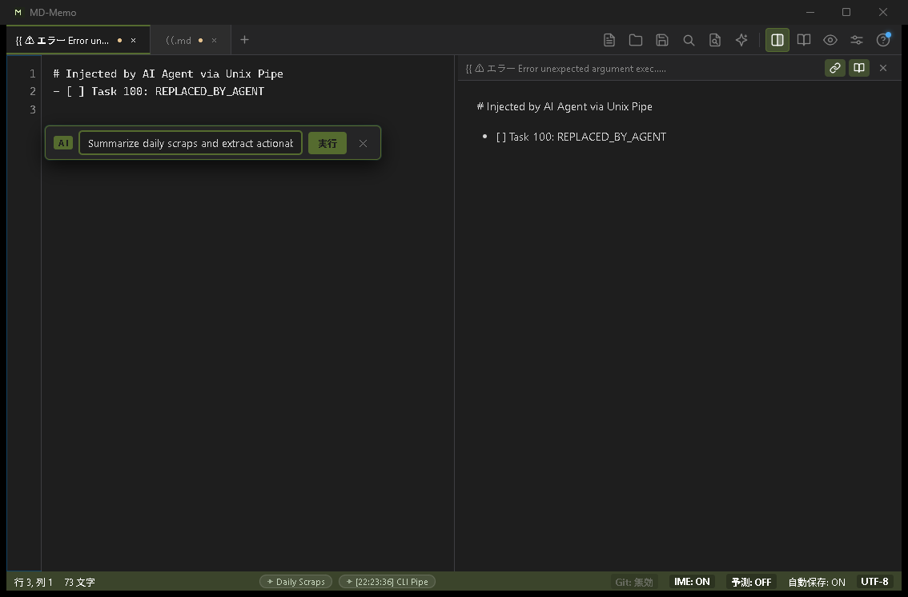
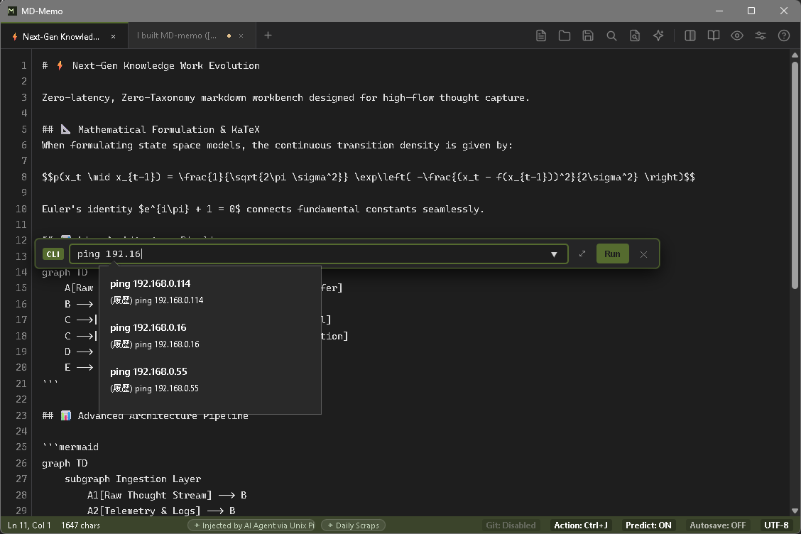
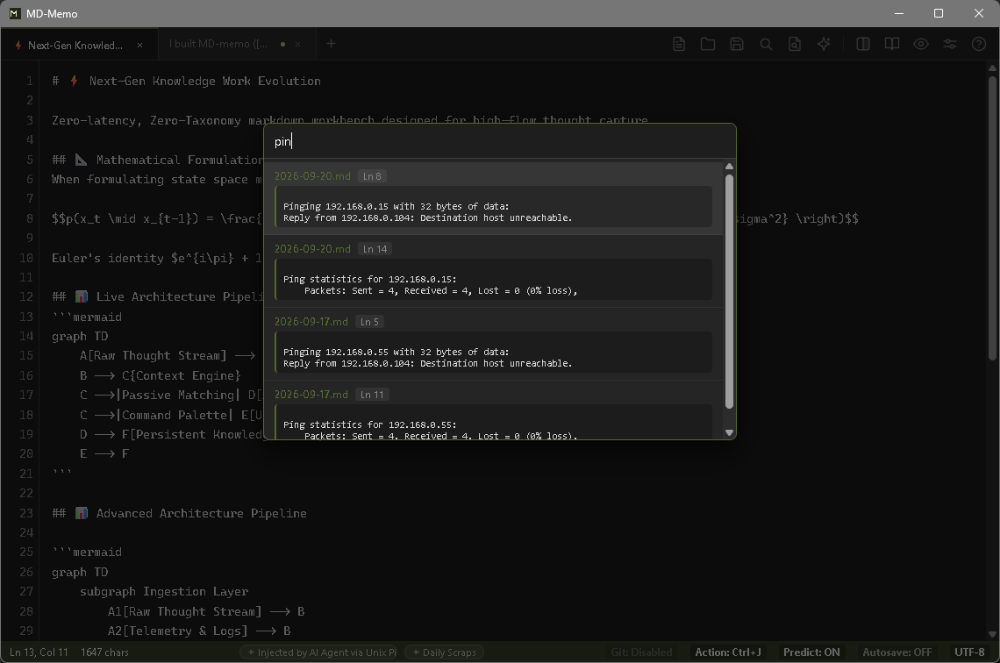
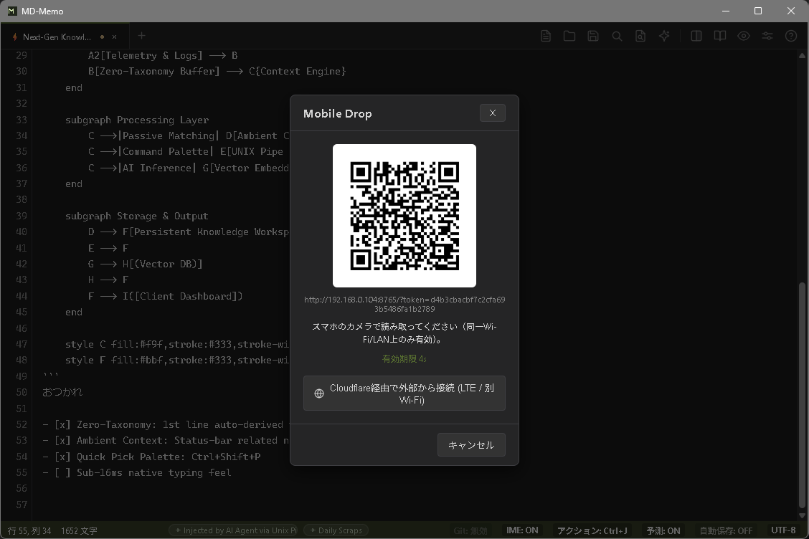
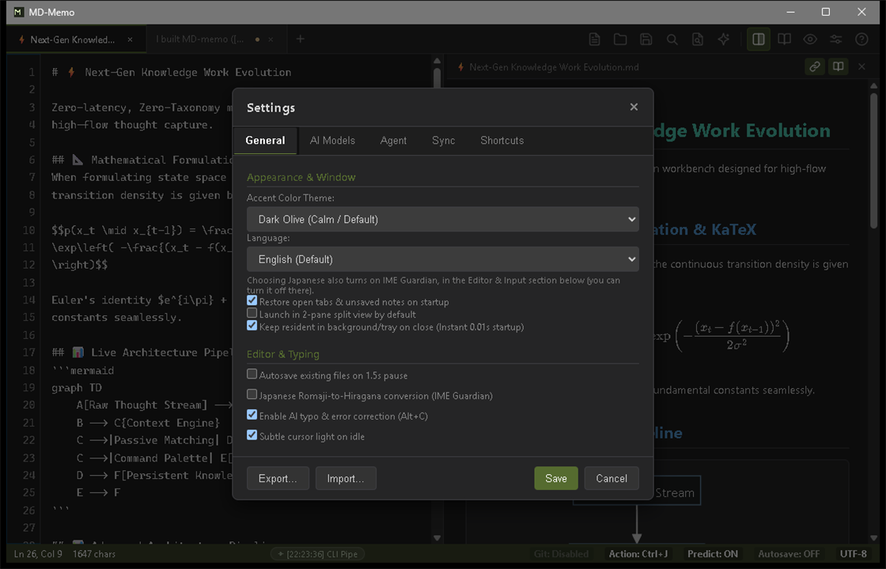
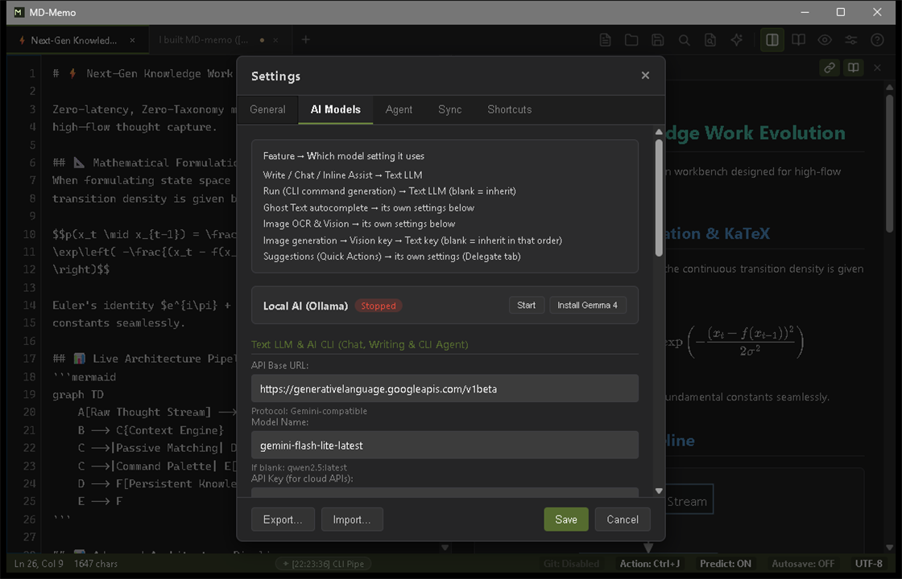
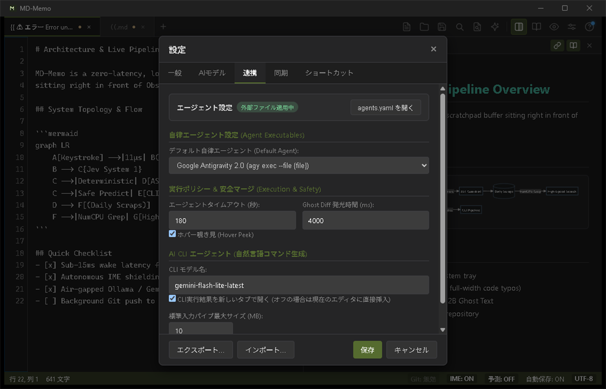
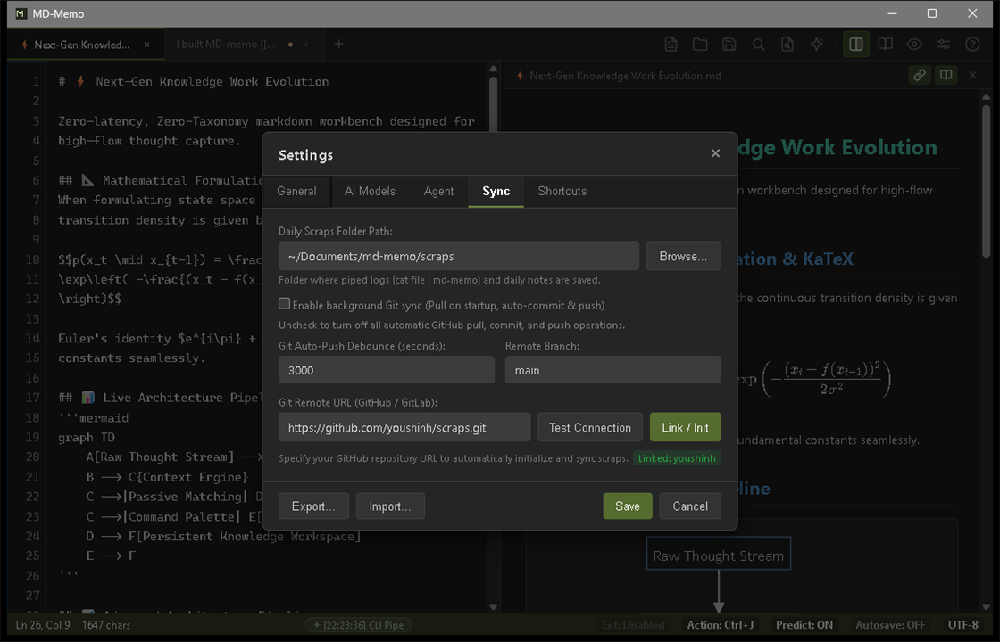

MD-Memo Comprehensive Guide
A zero-latency Markdown scratchpad engineered for instant capture.
From first-time setup to advanced JSON-RPC IPC and autonomous CLI agent orchestration.
01 Getting Started: Core Philosophy
MD-Memo does not seek to replace expansive knowledge vaults like Obsidian or Notion. Instead, it serves as the zero-friction, instant-entry buffer standing directly in front of them.
Fleeting thoughts, terminal logs, and exploratory notes are captured with sub-millisecond feel and persisted as standard POSIX Markdown files, ready to be piped into your long-term vault whenever desired.
- Zero Save Anxiety: Notes autosave automatically after a 1.5-second idle pause.
- Instant Summon: Wake the app from your system tray in milliseconds via Ctrl+Alt+M.
- Zero Typo Friction: Autonomous IME Shield prevents accidental full-width characters inside code blocks and URLs.
Everything AI-related is organized around three verbs — Write, Run, and Delegate — and each has exactly one entry point. If you are not sure which one you want, start with Which one do I use?
Installation & Launch
MD-Memo is delivered as a lightweight standalone binary with zero installer overhead.
Requirements: Windows (x64) with the Microsoft Edge WebView2 Runtime (included with Windows 11; MD-Memo cannot start without it), or macOS 10.15 or later.
Windows (winget):
winget install youshinh.md-memomacOS (Homebrew):
brew install --cask youshinh/tap/md-memo
Releases are ad-hoc signed, not notarized by Apple, so Gatekeeper will initially refuse to open MD-Memo.app. Either right-click it in Finder and choose Open (then confirm), or clear the quarantine flag once: xattr -dr com.apple.quarantine "MD-Memo.app". Starting with the next release, the macOS build is a universal binary supporting both Apple Silicon and Intel Macs.
No Mac to test on? Every push to the repository builds a ready-to-run MD-Memo.app on GitHub's hosted macOS runners: open the Actions tab (or trigger the CI workflow by hand via Run workflow), open the latest CI run, and download md-memo-macos-<commit-sha> from its Artifacts. It is ad-hoc signed the same way, so the same first-launch step applies.
Standalone binaries are also directly downloadable from our GitHub Releases page.
Update check: shortly after launch, MD-Memo asks GitHub whether a newer release exists (a single request to api.github.com; no note content is sent). If there is one, a small badge appears on the Help (?) button.
System Tray & Instant Summon (Ctrl+Alt+M)
On Windows, clicking the close button minimizes the application to the system tray while aggressively reclaiming working memory down to 5–15 MB via Go's runtime GC. macOS has no menu-bar tray icon: closing the window keeps MD-Memo running in the Dock instead, with the same aggressive memory reclamation — click the Dock icon, or use the global hotkey, to bring it back, and quit with Cmd+Q.
- Windows: Ctrl + Alt + M
- macOS: Option + Cmd + M
Pressing the global hotkey summons the editor in front of any active window in less than 15ms, with your cursor exactly where you left off.
Autonomous IME Shield (IME Guardian)
Technical writing in multilingual environments often leads to full-width alphanumeric typos (such as ｃａｔ instead of cat) inside code blocks and commands.
- Lexical Scope Protection: Forces alphanumeric mode inside inline code (
`...`), fenced code blocks, and URLs with only 11 µs overhead. - Romaji Auto-Conversion: Detects Romaji cadence typed while in direct input mode and seamlessly converts it into proper kana.
Daily Scraps Model
You don't need to invent filenames. MD-Memo defaults to a daily scratchpad file (scraps/YYYY-MM-DD.md) for rapid journaling and terminal pipe captures.
With Ctrl+Shift+F (described below), you can search across years of daily scraps in milliseconds.
02 Capabilities Guide
MD-Memo's features are organized around three verbs — Write, Run, and Delegate. Each one has a single entry point to remember, plus a separate suggestion layer for the moments when you are not sure what to do next.
Which one do I use?
| What you want | Entry point | What it does |
|---|---|---|
| Write Fix or draft the text in front of you |
Ctrl + K (macOS: Cmd + K) |
The built-in LLM rewrites or generates text in seconds, right where your cursor is. |
| Run Execute a command |
Command bar Ctrl + Shift + B / Ctrl + Shift + E |
Pipes your selection through a shell command and replaces it with the output. As fast as the command itself. |
| Delegate Hand off a whole investigation or implementation |
Type {{ instruction }} in the note |
An external agent CLI (Claude Code, Codex, Hermes, Antigravity, …) works in the background for minutes. |
| Not sure what to do | Ctrl + J (macOS: Cmd + J) |
Suggests up to three next steps for what you are writing (Quick Actions). Each card maps to Write, Run, or Delegate. |
- Write acts on the text already in front of you. Select it, then press Ctrl + K.
- Run is for when you want the output of a command. No waiting on a model.
- Delegate is for work you would rather not do by hand. It can take minutes, and you keep editing the note while it runs.
Write · Inline AI Prompt Bar (Ctrl+K / Ctrl+L)
Select text and press Ctrl + K to summon an in-place instruction bar — no modal, no context switch.
- "Explain what causes this error and how to fix it"
- "Translate this into natural Japanese"
- "Summarize this into meeting-note bullets"
Press Enter and the selection is replaced (or extended) in place; Undo brings the original back instantly. When you want room to write a longer instruction, Ctrl + L opens the same prompt as a modal.

Ctrl + L
Common instructions are one keystroke away. Open the command palette with Ctrl + Shift + P and pick a preset — the prompt bar opens pre-filled:
- UNIX Pipe: Polish & Refactor — tightens the selection into concise, logical prose.
- UNIX Pipe: Convert to Bullet Points — extracts the key points as structured Markdown bullets.
- UNIX Pipe: Extract Action Items — pulls TODOs out of the text as a
- [ ]checklist.
Write · Ghost Text (Predictive Completion)
This is the passive form of Write. Pause while typing and your local Ollama instance (or cloud API) proposes the next few words inline, in dimmed text. You never have to summon it.
- Accept All: Press Tab
- Accept Next Word: Press Ctrl + → (macOS: Option + →)
- Dismiss: Keep typing and it disappears silently.
Write · Proofreading & Typo Correction (Alt+C)
When writing an instruction feels like too much, select the text and press Alt + C (macOS: Cmd + Shift + C). No prompt is needed: it fixes typos and awkward phrasing without rewriting your meaning, which makes it the right tool for polishing meeting notes and reports.
Write · Paste Image OCR (Ctrl+V)
Paste any clipboard image with Ctrl + V to trigger Gemini Vision OCR, transcribing diagrams, tables, and handwritten notes into structured Markdown.
Write · Smart Paste (Ctrl+V / Ctrl+Shift+V)
Ctrl + V and Ctrl + Shift + V paste the clipboard differently depending on what is on it.
| Shortcut | Text on the clipboard | Image on the clipboard |
|---|---|---|
| Ctrl + V (plain paste) | Pasted as plain text; any formatting from the source is stripped. | Transcribed to Markdown / Mermaid by the Image OCR vision model — needs "Automatically transcribe pasted images" enabled and an API key configured (Settings → AI Models → Image OCR). |
| Ctrl + Shift + V (special paste) | HTML from a web page, Word, or Google Docs is converted to clean Markdown: headings, lists, tables, links, and code blocks are kept; <script> tags and javascript: links are dropped. Plain text pastes the same as Ctrl + V. |
Saved as ./assets/YYYY-MM-DD-HHmmss.png next to the note (the workspace folder for an unsaved note, otherwise the app data folder), and  is inserted at the caret — the image is not sent for OCR. |
Ctrl + Shift + V used to open Preview to the Side; that command is now on Ctrl + Alt + V (macOS: Cmd + Option + V).
Write · Voice Input (Ctrl+Shift+R)
Press Ctrl + Shift + R (macOS: Cmd + Shift + R) to start recording. A marker such as ⦅音声入力中... [id:xxxx]⦆ is inserted at the caret and you can keep typing or click elsewhere while it records.
- Stopping: recording stops automatically after 5 seconds of silence (configurable from 1 to 30 seconds), or press Ctrl + Shift + R again to stop manually. Esc discards the recording immediately — the marker is removed and nothing is sent.
- Transcription: the recording is sent to a Gemini model (default
gemini-2.5-flash) for transcription. Model, silence duration, and prompt are configurable in Settings → AI Models; it uses the same API key as Image OCR. - If transcription fails: the audio is kept in the app data folder under
voice_cache, and the marker becomes⦅文字起こし失敗: [再試行(id:xxxx)] [音声保存] [破棄]⦆. Click inside [再試行] (retry) to transcribe again, [音声保存] (save audio) to move the file to./assets/and insert an[audio](...)link, or [破棄] (discard) to delete it. - Requirements: a Gemini API key (Settings → AI Models → Image OCR). On Windows, MD-Memo needs microphone access; the OS will prompt for it the first time.
Run · Command Bar: CLI Mode (Ctrl+Shift+B)
Pipe the current selection through a local UNIX command such as jq, sort, tr, or duckdb, and replace it with the command's standard output.
Ctrl + Shift + B and Ctrl + Shift + E open the same command bar in different modes. Click the badge at the left edge of the bar (CLI / AI CLI) to switch at any time. Rule of thumb: if you can write the command yourself, use CLI mode; if you can't, use AI CLI mode.

Ctrl + Shift + B
Useful presets:
jq .— pretty-print and indent JSONsort -u— drop duplicates and sort alphabeticallytr a-z A-Z— convert to uppercaseduckdb -box— run SQL inline and print a table
The input field offers the most-used commands as suggestions. If you would rather see the output in a new tab than replace your selection, flip that option under Settings → Agent, in the "Commands (Run)" section.
Run · Command Bar: AI CLI Mode (Ctrl+Shift+E)
The AI mode of the same bar. Describe the task in plain language — "find files modified in the last 24 hours", "kill whatever is using port 8080" — and the model writes the matching shell command for you.
Every generated command goes through a safety check before it runs. Commands that could destroy your system are refused outright, and risky ones raise a warning. Read the command before you run it.
Delegate · Hand work to an agent ({{ }})
Write {{ instruction }} anywhere in a note and press Ctrl + Enter (or click the ▶ Run button that appears next to the block). The instruction is handed to an external agent CLI, which runs in the background; when it finishes, the whole {{ }} expression is replaced by the result. This notation is called a slot.
The difference from Write is duration. Inline AI answers in seconds; an agent may spend minutes searching the web or reading files. You can keep editing the note the entire time.
{{ }} and nothing else
The other notations below are all variations on it. When in doubt, write plain language inside {{ }} and it will work.
How to run one
- Type
{{in the note. A quick selector opens just below the caret, listing every notation available to you. - Move with ↑ ↓ and confirm with Tab or Enter. Pressing 1–9 picks an entry immediately. Esc closes it, and it also disappears on its own as soon as you keep typing normal words.
- Confirming inserts
{{ code:…}}and puts the caret where the instruction goes. - Write the instruction, then press Ctrl + Enter (macOS: Cmd + Enter) to run it. Alternatively, click the small ▶ Run button: while the caret is inside a complete block that is not running yet, it appears next to that block (hover text: "Run this slot (Ctrl+Enter)"; on macOS, Cmd+Enter).
{{ code: write a Go function that loads this project's config file }}
[? What is Go's release cadence in 2025, and what is the current stable version? ]If there is nothing runnable at the caret, Ctrl + Enter leaves your text alone and the status bar shows "No slot found to run (place the cursor inside a {{ }}-style block)." for a few seconds. If that slot is already running, it shows "This slot is already running." instead.
If a Japanese IME turns your brackets into full-width characters (｛｛, 【？), they are normalized back automatically. Delimiters that appear inside fenced code blocks, inline code, Markdown links, or bare URLs are never treated as slots, so a {{ }} in a code sample will not fire by accident.
The default notations
| Notation | Profile | Default agent | What it is for |
|---|---|---|---|
{{ ... }} |
code | claude-code | Code generation. Returns a runnable code block with no preamble. |
[? ... ] |
research | claude-code | Research. Searches the web and answers concisely with figures and primary-source URLs. |
【? ... 】 |
writing | hermes | Writing. Stays fully local — no outbound calls — and reshapes the text into clear bullets. |
[! ... !] |
adversarial | claude-code | Adversarial review. Names three risks, vulnerabilities, or bottlenecks instead of agreeing with you. |
[>> ... ] |
deep-research-and-code (recipe) | default agent | Multi-step run: research → risk critique → implementation, in order. |
Each notation carries its own agent and its own standing instruction, so the same sentence comes back in a different shape depending on which one you use. Any slot can start with a role name — {{ research: something to look up }} — which is used as the label for that task in the task panel.
If your project keeps skill files at skills/<name>/SKILL.md, writing {{ @skill-name: instruction }} passes that file's contents to the agent as extra instructions. If the file cannot be found, the slot is replaced by an error instead.
While it runs, and the task panel (Alt+T)
The moment a slot starts, it turns into {{ ⟳ 実行中... }} in place. The agent runs in the background, so you can edit elsewhere in the note — or start several slots at once.
- Task panel: press Alt + T (macOS: Option + T), or click the running-task indicator in the status bar. It lists everything in flight plus a short history.
- Progress (Hover Peek): each task card shows the agent's most recent output line, refreshed every second, so you can tell whether it is stuck or moving.
- Cancel: the card's cancel button kills the process and restores the slot to your original instruction.
- Timeout: 180 seconds by default. On timeout the slot is replaced by a timeout message. You can set anywhere from 10 to 600 seconds under Settings → Agent, in the "Agents (Delegate)" section.
Results are merged only after you have stopped typing for about half a second, so an agent finishing mid-sentence will never move your caret out from under you.
Getting the result, and undoing it
- Ghost Diff: right after the result lands, the editor glows amber briefly to show a result just landed (4000 ms by default, configurable). The whole editor glows; the changed text itself is not marked.
- Undo: press Esc while the glow is showing (and for one second after it fades) and that slot alone reverts to your original instruction. Ctrl + Z undoes the slot replacement the same way.
- Inline slots stay inline: if the slot had other text on its line, line breaks are stripped from the result so it stays on one line.
Approval gates in recipes
A recipe such as [>> ... ] runs several steps in sequence. When a recipe defines requires_approval_step, the run pauses after that step and inserts a line into the note:
- [ ] 次のステップ（実装コードを生成する）を実行する // approve
Review what you have so far, change [ ] to [x], and press Ctrl + Enter to continue. Leave the box unchecked and nothing else happens.
Agent CLIs are installed separately
MD-Memo does not bundle any agent. Install the commands you intend to use — claude, codex, ollama, agy — and make sure they are on your PATH.
The built-in agy (Antigravity) agent is started with --dangerously-skip-permissions, so a slot that uses it can edit files and run commands without asking you. Settings → Agent shows a warning whenever the selected agent is configured that way. If you would rather be asked, override agy in agents.yaml (see below) and remove that flag from its args.
When a command cannot be found, the slot is replaced by an error like the one below. Fix the cause, put the caret back in that slot, and press Ctrl + Enter to retry.
{{ ⚠ エラー: エージェント起動失敗: ... (再試行: Ctrl+Enter) }}
Agents are launched from the project root, found by walking up from the note until a folder containing .md-memo/, agents.yaml (also agents.yml or agents.json), AGENTS.md, skills/, or .git/ is reached. If none of these is found, the note's own folder is used. If the project root has a .env file, its variables are passed to the agent's environment (only that file is read).
Customizing it in agents.yaml
Every notation, agent, and recipe is defined in agents.yaml. Settings → Agent → "Agents (Delegate)" has an Open agents.yaml button; if no file exists yet, a fully commented template is generated and opened for you.
The first file found wins (.yaml, .yml, .md, and .json are all accepted):
<scraps folder>/.md-memo/agents.yaml— per-project configuration%APPDATA%\md-memo\agents.yaml(macOS:~/Library/Application Support/md-memo/agents.yaml)
version: 2
default_agent: claude-code
timeout_seconds: 180
hover_peek_enabled: true
ghost_diff_duration_ms: 4000
# 1. The CLIs to call. {instruction} becomes your prompt, {file} the note's absolute path.
agents:
claude-code:
command: "claude"
args: ["--file", "{file}", "--prompt", "{instruction}"]
description: "Claude Code"
my-agent:
command: "my-cli"
args: ["--prompt", "{instruction}"]
description: "Our in-house agent"
# 2. Notation-to-agent mapping. Only what you list here stays active.
slot_profiles:
- trigger_open: "{{"
trigger_close: "}}"
name: "code"
agent: "claude-code"
system_instruction: "Skip any preamble and output only a runnable code block."
- trigger_open: "<<"
trigger_close: ">>"
name: "review"
agent: "my-agent"
system_instruction: "Review the changes and report your findings as bullet points."
# 3. Recipes run several steps in sequence.
recipes:
- trigger_open: "[>>"
trigger_close: "]"
name: "deep-research-and-code"
description: "Research -> risk critique -> implementation"
steps:
- "Research the current official specification and best practices"
- "Point out migration risks and breaking changes"
- "Generate the implementation based on the above"
requires_approval_step: 2
self_refine: true- Placeholders:
{instruction}is replaced by what you wrote in the slot,{file}by the current note's absolute path. If you never mention{instruction}, it is appended as the final argument. - Choosing delimiters: pick
trigger_open/trigger_closepairs that do not collide with ordinary Markdown syntax (#,*,-, and so on). - How overriding works: writing
slot_profilesorrecipesreplaces the defaults, so copy over any of the four built-in notations you still want.agentsbehaves differently: built-in agents you don't override are kept. - self_refine: set it to
trueand the recipe's first step runs a draft → self-critique → revise loop (up to two passes) before moving on. - Save the file as UTF-8 without a BOM.
Suggest · Quick Actions (Ctrl+J)
This is the "I don't know what to do next" button. Press Ctrl + J (macOS: Cmd + J) and MD-Memo reads what you are writing and proposes up to three next steps as cards.
The cards are deliberately chosen to be unlike each other in kind. With the built-in local rules (the default), you get Delegate cards (insert a {{ … }} or [? … ] slot and hand it to an agent) and Run cards (execute a shell command such as git status) — typically Delegate, Run, Delegate. Write cards (have the AI draft text) appear only when an external inference model is configured. Picking a card drops you straight into that verb's entry point.
| Action | Key |
|---|---|
| Run a specific card | Ctrl + 1 – Ctrl + 3 (macOS: Cmd + 1 – Cmd + 3; Alt+1 – Alt+3 also work) |
| Move the selection | Ctrl + Tab (Ctrl + Shift + Tab goes back; a literal Ctrl on macOS too) |
| Run the selected card | Enter, after you have moved the selection with Ctrl + Tab |
| Dismiss | Esc |
While the panel is open it shows a hint line: "Ctrl+1..3 Run now / Ctrl+Tab Move → Enter Confirm / Esc Close". A plain Enter pressed without first moving the selection is just a newline: it never runs a card, and it closes the panel. Bare digits, a bare Tab, and Ctrl + Enter (which still runs a slot) are never taken by the panel, so it never competes with your typing.
Besides Ctrl + J, the panel can appear on its own after a typing pause (on by default). If you would rather it stayed quiet, choose "manual only" under Settings → Agent, in the "Suggestions (Quick Actions)" section — the delay before it appears is configurable there too. The shortcut itself can be reassigned under Settings → Shortcuts.
Status-bar badge: the "Action" badge in the status bar shows the current mode, and clicking it cycles On → Manual → Off → On. It reads "Action: ON", "Action: Ctrl+J" (your configured key; Cmd+J on macOS) or "Action: OFF". It mirrors the two checkboxes under Settings → Agent → Suggestions (Quick Actions). While it is Off, the Ctrl + J shortcut does nothing.
Cards that run a shell command are always checked first. If the check finds a destructive command such as rm, dd, or mkfs, a write into a protected system directory, or a fork bomb, the card is refused and the reason is shown instead. It guards against known dangerous patterns rather than everything imaginable, so read the command before you accept it.
By default, suggestions come from built-in local rules and nothing from your note leaves your machine. Text is sent only if you enter an API key (it goes to OpenRouter's fixed endpoint) or change the Base URL to something other than the OpenRouter default (it goes to <Base URL>/predict) — that is when an external inference model (such as Jev) is queried. What is sent is an excerpt of the note around the caret: up to 1,500 characters before it and 500 after (about 2,000 in total). The Base URL and Model Name fields come pre-filled with https://openrouter.ai/api/v1 and jev-latest; with no API key, that stays local. Safety check: the AST guardrail. The glossary explains these internal names.
Editor & Split Mode (Ctrl+\)
Press Ctrl + \ (macOS: Cmd + \) or click the split icon in the header to open a synchronized 2-pane view.
- Synchronized scrolling: scroll one pane and the other follows.
- Preview toggle: use the preview icon on the right pane to show the live HTML rendering.

Ctrl + \
File Links & Drag & Drop
Drop a file onto the editor text and a Markdown link is inserted at the caret — images become . While a file is dragged over, the editor frame pulses and an "Insert as link" badge follows the pointer. Dropping onto the tab bar or the header still opens the file as a new tab, as before.
Because the embedded browser does not expose the original path of a dropped file, MD-Memo copies it into ./assets/ next to the note and links to it relatively; the file's original location is not recorded.
- Open a link: Ctrl + Click (macOS: Cmd + Click) on a
file://or relative link opens it with the system's default application. - Reveal a link: Alt + Click (macOS: Option + Click) shows the file in Explorer / Finder.
- Image preview: hovering an image link for 0.3 seconds shows a thumbnail.
Live Mermaid Diagrams & Image Rendering
Fenced code blocks with ```mermaid render live diagrams in the preview pane. You can right-click any diagram and choose "Render Image..." to generate a high-resolution PNG using Nano Banana 2 Lite.
Parallel Daily Scrap Search (Ctrl+Shift+F)
Press Ctrl + Shift + F to open the search modal, and click any result to jump straight to that line.
Leverages all available CPU cores (runtime.NumCPU()) to run a case-insensitive substring search (plain text, not a regular expression) across your historical scraps in under 150ms.

Ctrl + Shift + F
Mobile Drop · Send from your phone (Ctrl+Shift+U)
Scan a QR code with your phone and send a photo, pasted text or a URL, or a small text file straight into the note you have open on the PC. There is no app to install and no account to create.

Ctrl + Shift + U
How to use it
- Open the QR dialog. Click the phone icon in the toolbar, press Ctrl + Shift + U (macOS: Cmd + Shift + U), or choose Mobile Drop in the Command Palette.
- Scan the code with the phone's camera. The phone must be on the same Wi-Fi / LAN as the PC. The address is also shown as text under the code if you would rather type it in.
- Fill the send tray on the page that opens: add up to 10 photos or files (60 MB total), record a voice note, and/or type text, in any combination, then press Send once for everything.
- The dialog closes and the content is appended to the end of the active note under a heading such as
## Mobile Drop [14:32:05](with the file name after it for photos and files).
The text currently selected on the PC — or the clipboard text if nothing is selected — is shown at the top of the phone page with a one-tap copy button, and the PC dialog shows what is being shared with the phone.
| On the phone | What ends up in the note |
|---|---|
| Photos / files (up to 10, 60 MB total) | Photos are transcribed to Markdown by the vision model that Ctrl + V image OCR uses (Settings → AI Models → Image OCR); the picture itself is not saved. .md and .txt are added as they are; .html, .js, .json, .py and other code or config files are wrapped in a fenced code block. Shift_JIS text files are converted automatically; binary files other than images are refused. |
| Voice note | Recorded in the page itself when connected through the Cloudflare tunnel (HTTPS); over plain LAN the phone's own recorder app opens instead. The recording is transcribed the same way as Voice Input and added as text. |
| Text or URL | The text exactly as typed or pasted. A lone URL becomes a Markdown link. |
Safety and limits
- It exists only while the dialog is open. MD-Memo starts a small local server when you open it and stops it after one submission, after 60 seconds without activity (opening the page on the phone counts as activity), or as soon as you close or cancel the dialog.
- One submission per code. To send something else, open the dialog again.
- Only someone with the code can send. The address contains a random one-time token; a request without it is refused before anything is read.
- Photos and cloud models. If your vision model is a cloud service such as Gemini, photos are sent to that provider, exactly as when you paste an image with Ctrl + V. With no API key configured they cannot be transcribed and the dialog shows an error.
- Location is opt-in and tunnel-only. When connected through the Cloudflare tunnel (HTTPS), the phone may attach its location once; the heading then reads like
## Mobile Drop [14:20:05] (34.693, 135.502). Over plain LAN HTTP, location is never requested or attached.
By default the phone and the PC must share a network, and nothing leaves it. If they do not, press Connect from outside via Cloudflare in the dialog. MD-Memo then opens a Cloudflare Quick Tunnel (no account needed) and the code changes to a temporary https://…trycloudflare.com address that stays valid for 90 seconds.
- It needs
cloudflared, which MD-Memo never downloads or installs for you. If it is missing, the dialog shows the install command (winget install --id Cloudflare.cloudflared -eon Windows,brew install cloudflaredon macOS) with a Copy button. Run it, then press the button again. - While the tunnel is up, the transferred data passes through Cloudflare's servers.
If the phone cannot open the page
- Check that both devices are on the same Wi-Fi. Guest networks and some routers stop devices from talking to each other ("AP isolation"), and a VPN on either side can get in the way.
- On Windows you may see a firewall prompt for MD-Memo the first time. Allow it on private networks.
- The code uses the address of the network adapter that carries your default route (virtual adapters such as WSL or Docker are skipped). If your phone is not on that network, use the outside connection above.
The toolbar icon can be hidden or moved under Settings → General → Toolbar & right-click menu. The shortcut and the Command Palette entry keep working either way.
Command Palette (Ctrl+Shift+P)
Access every editor command, hotkey, and setting via keyboard fuzzy search.
03 Settings Reference
Open settings via the top slider icon or context menu. Settings are organized across 5 distinct tabs.

Settings → General
1. General Tab
| Setting | Default | Description |
|---|---|---|
| Accent Color Theme | Dark Olive | Choose between Dark Olive, VS Code Blue, Forest Teal, and Charcoal Monochrome. |
| Language | English / Japanese | Switch the UI language. |
| Restore Open Tabs | Enabled | Restores unsaved buffers and previous tabs upon application launch. |
| 2-Pane Split by Default | Disabled | Always launches in split view when checked. |
| Resident in Tray | Enabled (Windows) | On Windows, minimizes to the tray on close, keeping sub-15ms wake ready. macOS has no tray: closing the window always keeps MD-Memo in the Dock, and this checkbox is disabled there with the hint "Not available on this platform yet; this setting currently has no effect." |
| Autosave on 1.5s Pause | Enabled | Silently saves existing files upon a 1.5-second typing pause. |
| IME Guardian | Enabled only if the system language is Japanese (Disabled by default on macOS) | Protects code blocks against IME full-width character leakage. On macOS the OS input source cannot be switched automatically yet, so it starts off there and Settings shows a hint saying so. |
| Enable AI typo & error correction (Alt+C) | Enabled | Turns the Alt + C proofreading command on or off. |
| Subtle cursor light on idle | Enabled | Shows a soft glow around the caret when typing stops. |
| Toolbar & right-click menu | Everything shown | Expand the section to choose which toolbar icons and right-click items are shown, and to reorder them within their group with the arrows. Changes apply immediately and Cancel undoes them. The Settings icon can be moved but not hidden, and keyboard shortcuts keep working for hidden items. Reset to default restores the original layout. |
The Export... and Import... buttons in the footer of the Settings dialog save all of your settings to a JSON file and load them back from one, using the native file dialog.
2. AI Models Tab
MD-Memo can run against a fully offline local LLM or a cloud API, whichever you configure here.

Settings → AI Models
- Feature → Which model setting it uses: the card at the top of the tab, showing which setting each feature reads. For example, Write / Chat / Inline Assist use the Text LLM, Ghost Text and Image OCR have their own settings, and Suggestions (Quick Actions) are configured on the Agent tab.
- Local AI (Ollama): a status badge with Start and Stop buttons for Ollama, plus Install Gemma 4, which installs Ollama if it is missing and pulls the
gemma4:e2bmodel. - Text LLM & AI CLI (Chat, Writing & CLI Agent): Base URL, model name, API key, and System Prompt. The protocol is detected from the URL and shown beneath it: Ollama, Gemini-compatible, or OpenAI-compatible.
- Inline Autocomplete (Ghost Text): its own URL, model, and key, plus the suggestion delay (default 500 ms, range 200–2000) and the maximum prediction tokens (default 30, range 10–100).
- Image OCR (Vision): the vision model and key, such as Gemini Flash Lite or Qwen 2.5 VL, plus a toggle "Automatically transcribe pasted images (Ctrl+V) using Gemini OCR" (on by default).
- Image Generation (Mermaid & Infographics): the model, aspect ratio, and resolution used by "Render Image...". If its Gemini API key is blank, it inherits the Vision key and then the Text key, in that order.
3. Agent & CLI Tab
This tab follows the three verbs and is split into three sections: Commands (Run), Agents (Delegate), and Suggestions (Quick Actions).

Settings → Agent
Commands (Run) — settings for the command bar.
- CLI Model Name: the model that writes commands in AI CLI mode (Ctrl+Shift+E). Leave it blank to inherit the AI Models tab.
- Open results in a new tab: show command output in a separate tab instead of replacing your selection.
- Max Pipe Input Size: failsafe limit for
cat log | md-memostdin pipes (default 10 MB), so a huge file cannot spike memory.
Agents (Delegate) — settings for the agents your slots call.
- Open agents.yaml: opens the file that defines notations, agents, and recipes. A commented template is generated if none exists yet.
- Agent: the default agent used when a notation does not name one. The list is built from the
agents.yamlcurrently loaded. - Agent Timeout: how long a run may take before it is cut off (default 180 s, range 10–600 s).
- Ghost Diff Duration: how long the highlight stays after a result lands (default 4000 ms). Esc undoes the slot while it is showing.
- Hover Peek: show the agent's latest output line on its task card.
Suggestions (Quick Actions) — settings for Quick Actions (Ctrl+J).
- Suggest automatically while typing: whether cards appear on their own after a pause.
- Manual only: turn off automatic suggestions and only show cards when you press Ctrl+J.
- Delay before suggesting (seconds): how long a pause has to be before cards appear.
- API Base URL / Model Name / API Key: the endpoint used to generate candidates. Leave the API Key empty and the Base URL at its default (
https://openrouter.ai/api/v1, modeljev-latest) to use the built-in local inference; nothing is sent until you enter a key or change the URL.
4. Sync Tab (Git & Scraps)

Settings → Sync
- Daily Scraps Folder: Path where
cat file | md-memoand daily notes reside. Use Browse... to pick it. Can point directly to an Obsidian vault. - Enable background Git sync: Runs
git pull --rebaseon launch, then commits and pushes automatically once you stop editing. It only acts when the scraps folder is a Git repository with a remote. - Git Auto-Push Debounce (seconds): How long to wait after the last change before pushing (default 30, range 5–3600).
- Remote Branch: The branch to sync with (default
main). - Git Remote URL, Test Connection, and Link / Init: Enter the URL of an empty repository, click Test Connection to check access, then click Link / Init. It runs
git initif needed, setsorigin, makes an initial commit, and pushes withpush -u.
5. Shortcut Cheatsheet
| Action | Windows | macOS |
|---|---|---|
| Global Summon / Hide | Ctrl + Alt + M | Option + Cmd + M |
| High-Speed Scrap Search | Ctrl + Shift + F | Cmd + Shift + F |
| Command Palette | Ctrl + Shift + P | Cmd + Shift + P |
| Inline AI Prompt Bar | Ctrl + K | Cmd + K |
| AI Prompt Modal | Ctrl + L | Cmd + L |
| AI Proofreading & Correction | Alt + C | Cmd + Shift + C |
| Suggest Quick Actions | Ctrl + J | Cmd + J |
| Command Bar: CLI Mode | Ctrl + Shift + B | Cmd + Shift + B |
| Command Bar: AI CLI Mode | Ctrl + Shift + E | Cmd + Shift + E |
| Mobile Drop (send from your phone via QR) | Ctrl + Shift + U | Cmd + Shift + U |
| Run Slot with an Agent | Ctrl + Enter | Cmd + Enter |
| Toggle Task Panel | Alt + T | Option + T |
| Split Editor Right | Ctrl + \ | Cmd + \ |
| Preview to the Side | Ctrl + Alt + V | Cmd + Option + V |
| Special Paste (rich HTML → Markdown) | Ctrl + Shift + V | Cmd + Shift + V |
| Voice Input | Ctrl + Shift + R | Cmd + Shift + R |
| Open Link | Ctrl + Click | Cmd + Click |
| Reveal Link (Explorer / Finder) | Alt + Click | Option + Click |
| Zen Mode | Ctrl + Shift + Z | Ctrl + Cmd + Z |
| Accept Ghost Text (Word) | Ctrl + → | Option + → |
| Insert Date / Time | F5 | Cmd + Shift + I |
Most of these can be reassigned under Settings → Shortcuts: click the key button for a row and press the combination you want. Backspace clears a binding, and Reset to Defaults restores the original keys. Four shortcuts are fixed and cannot be reassigned: Ctrl + Enter (run slot), Alt + T (task panel), Ctrl + Alt + V (preview to the side), and Ctrl + → (accept a ghost-text word), or their macOS equivalents in the table above.
04 Power User & Hackers Manual
MD-Memo is fully programmable via local TCP IPC (JSON-RPC 2.0) and headless CLI commands.
UNIX Terminal Pipe
Pipe standard output directly into MD-Memo. Transmits to the running instance in <1ms, appends the entry to the end of today's scrap (scraps/YYYY-MM-DD.md) with a timestamp and the command name, and raises the window.
# Pipe a command's output straight into your notes
cat build.log | md-memo
# Record a curl result directly in your notes
curl -s https://api.github.com/zen | md-memoJSON-RPC 2.0 API Specification
Upon startup, MD-Memo writes its connection details to ipc-session.json (in %AppData%\md-memo\ on Windows, ~/Library/Application Support/md-memo/ on macOS). The file holds {pid, port, token, started_at}. Port 49152 is preferred, but if it is busy a random free port is used instead, so always read the port from that file.
Connect over TCP to 127.0.0.1 and send newline-delimited JSON-RPC 2.0 requests:
| Method | Params | Description |
|---|---|---|
buffer.get |
{"tab_id": "..."} |
Retrieve the content, hash (first 16 hex characters of the SHA-256), generation index, and line count. Omit tab_id for the active tab. Among the buffer methods, only buffer.get honors tab_id; the others act on the active tab. |
buffer.set |
{"content": "...", "expected_hash": "..."} |
Atomic replace with conflict detection while preserving undo tree. |
buffer.append |
{"content": "..."} |
Append to the active buffer. |
buffer.replace |
{"start_line": 1, "start_col": 1, "end_line": 2, "end_col": 1, "content": "..."} |
Selective range replacement. |
tab.list |
{} |
List all open tabs and which one is active. |
tab.switch |
{"tab_id": "tab_123"} |
Switch focus to the given tab. |
ui.toggle_split |
{} |
Toggle 2-pane split mode. |
ui.activate |
{} |
Bring window to the foreground. |
ui.eval |
{"expression": "document.title"} |
Run an arbitrary JavaScript expression inside the app's WebView and return the result. |
The token in the session file is optional. A request is rejected only if it supplies a token (in an auth field) and that token is wrong. The server listens on 127.0.0.1 only, but any program running on your computer can call these methods, including ui.eval, which runs JavaScript inside the app. Treat the port as open to every local program.
Headless CLI Commands
The buffer (get, set, append, replace, replace-selection), tab (list, switch <id>), and ui (activate, toggle-split, eval <expr>) commands need a running MD-Memo; jev and agent run standalone. When output is redirected or piped it is JSON unless you pass --text, so use md-memo buffer get --text > note.md to save plain text. --json and --tab <id> are supported on every buffer subcommand.
# 1. Print the current buffer (plain text in a terminal; JSON if redirected)
md-memo buffer get
# 2. Print it as JSON with metadata (hash, generation, length, line count, ...)
md-memo buffer get --json
# 3. Replace the buffer with text from the terminal stream
echo "# Updated note" | md-memo buffer set
# 4. Replace it only if it has not changed since you read it (optimistic lock)
echo "Safe update" | md-memo buffer set --expected-hash a1b2c3d4e5f60718
# 5. Append to the end of the buffer
echo "- [ ] New task" | md-memo buffer append
# 6. Replace one range (line:column, both 1-based)
echo "replacement" | md-memo buffer replace --start 2:1 --end 2:10
# 7. Print only the current selection; exits 1 with "no active selection" on stderr if none
md-memo buffer get --selection
md-memo buffer get --selection --json
md-memo buffer get --selection --tab tab_2
# 8. Replace the selection with piped text, as one undo step
# (refuses with a conflict error if the selection changed since it was read)
cat formatted.txt | md-memo buffer replace-selection
# 9. Check a shell command against the AST guardrail (exit code 0 = safe)
md-memo jev verify "git status && npm test"
# [SAFE] Command passed AST validation: git status && npm test
# 10. A blocked command exits with code 1; --json prints the verdict as JSON
md-memo jev verify --json "rm -rf /"
# {
# "isSafe": false,
# "reason": "破壊的コマンド \"rm\" は安全基準により実行を拒否されました (Destructive command blocked)",
# "command": "rm -rf /",
# "rule": "destructive",
# "subject": "rm"
# }
# 11. Prune a Markdown file down to what is relevant to a query
md-memo agent prune --query "login bug" --file notes.mdExternal Editor Recipes
Neovim / Vim Send Command:
" .vimrc / init.vim
command! MDMemoSend :w !md-memoPowerShell Clipboard Append:
Get-Clipboard | md-memo buffer appendDump a tmux pane into your scraps:
tmux capture-pane -p | md-memoGlossary: internal names and what they refer to
Release notes, configuration files, and CLI subcommands still carry the names these features were built under. You never need them for day-to-day use, but here is what they mean when you run into them.
| Term | Which feature | What it means |
|---|---|---|
| Jev | Quick Actions | An external judging / inference model provided by TypeSafe AI — it is not built into MD-Memo. It is used only when you enter an API key, or point the Base URL somewhere other than the OpenRouter default, under Settings → Agent → Suggestions (Quick Actions); otherwise MD-Memo uses its built-in local rules. The name also survives as a CLI subcommand, as in md-memo jev verify, but jev verify (the AST check) runs entirely locally. |
| Slot | Delegate to an agent | The {{ }}-style notation in your note, and the mechanism that calls an agent from it. slot_profiles in the config file is where those notations are defined. |
| System 1 | Quick Actions | The name for the fast inference mode that answers without deliberating — borrowed from the intuitive half of human thinking. It is why suggestions do not keep you waiting. |
| 3-Beam | Quick Actions | The approach of offering up to three candidates at once rather than committing to one. Those are the three cards you see. |
| MAP-Elites | Quick Actions | The algorithm that keeps the three cards from resembling each other by picking candidates of different character, such as a Run card next to a Delegate card. Which kinds appear depends on what you are writing and on whether an external model is configured. |
| AST guardrail | Quick Actions / md-memo jev verify |
Parses a shell command as syntax before running it and refuses it on detecting a destructive command, a write into a protected system directory, and similar patterns. It covers known dangerous patterns, not every possible risk. |
| Ghost Diff | Delegate to an agent | The brief amber glow of the editor shown right after an agent's result is merged into the note, to signal that a result just landed. It does not mark the changed text. Esc undoes the change while it is glowing and for one second after. |
| Hover Peek | Task panel | The latest output line from a running agent, shown so you can peek at its progress. |